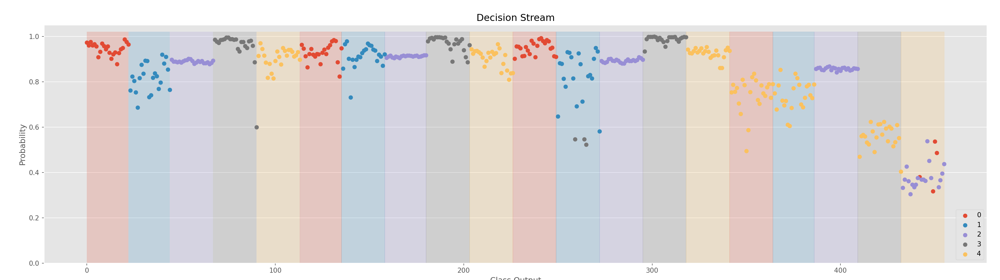
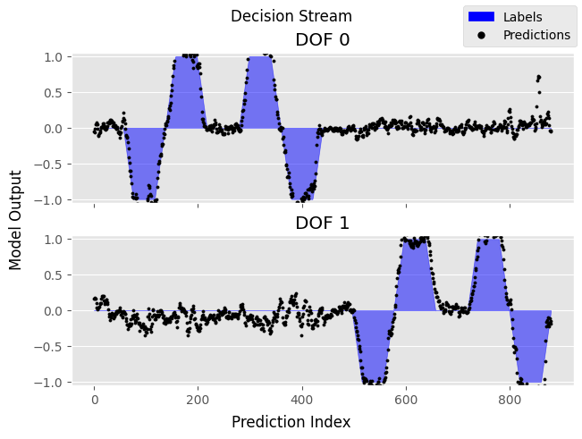
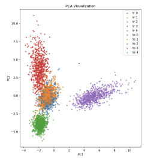
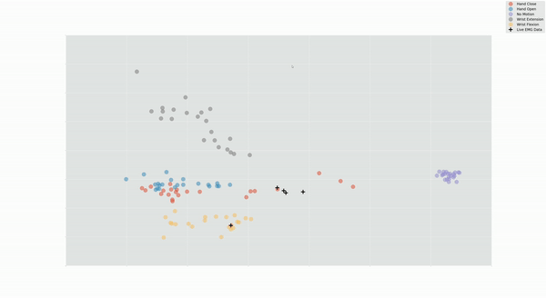
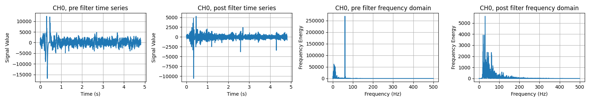

Online Data Handler
There is different convenient functionality in the OnlineDataHandler to help developers. Firstly, two visualize functions: visualize and visualize_channels, exemplified in Table 1 are included.
from libemg.streamers import myo_streamer
from libemg.data_handler import OnlineDataHandler
if __name__ == "__main__":
streamer, sm = myo_streamer()
odh = OnlineDataHandler(sm)
odh.visualize()
|
|


Figure 1: Raw Data from the OnlineDataHandler
EMG Classifier
The EMG classifier contains a visualization tool for viewing the decisions stream (i.e., the predictions over time) for a particular classifier using the visualize function.

Figure 2: The decision stream of a classifier.
EMG Regressor
The EMG regressor also contains a visualization tool for viewing the model’s decision stream. Similar to the classifier, you can view the decision stream using the visualize method.

Figure 3: The decision stream of a regressor.
Feature Extractor
The Feature Extrator and Online Data Handler contain a visualization tool for viewing the PCA feature space. This can be done using the visualize_feature_space function. If this function is run on an online data handler, a live PCA feature space will be shown (see Figure 4).
 |
 |
Figure 4: The PCA feature space of a set of data.
Filtering
The filtering module has a visualize_effect function that demonstrates the effect of a filter on a set of data in the time and frequency domain.

Figure 5: Data before and after filtering in the time and frequency domain.
Heatmap
Viewing EMG as a time series may not be appropriate for high-density EMG systems. LibEMG offers a live heatmap visualization using the visualize_heatmap method. Heatmaps of multiple features can be visualized in real-time to show spatial information (only features that produce a single value per window are supported).

Figure 6: Real-time heatmap visualization.